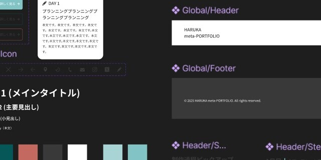
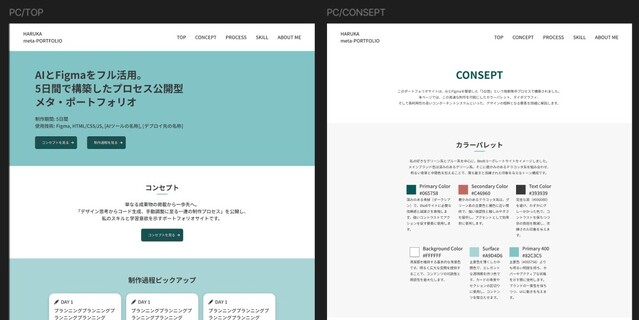
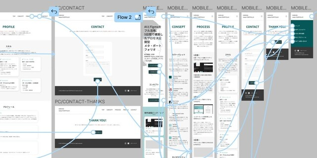

PROCESS
ゼロからの手作業とAIアシスタントによる効率化にメリハリをつけた制作を意識しました。
効率化と学習を両立させる制作サイクルは、今後の仕事や生活でAIを活用していく方針の1つになりました。
01
企画・設計
02
Figmaデザイン
03
AIの選定
04
実装
05
サイト公開
STEP
01
企画・設計・サイトコンセプトの設定
BtoBコーポレートサイト風のメタ・ポートフォリオ
- ・実務での経験が多い分野のため、提供可能なスキルの実例として適切
- ・AIと連携がしやすい
- ・メタポートフォリオという設計と相性が良い（事例紹介＝デザイン紹介、制作過程、会社概要＝プロフィール）

STEP
02
デザインカンプ・プロトタイプ
Figmaの習得：コンポーネント、バリアント、プロトタイプ
- ・コンポーネントとバリアントの活用：手戻りリスクを低減
- ・アセット定義：デザイン資産の再利用性を高めるFigmaスキルを獲得
- ・AI利用を前提としたFigma設計：後の工程の工数を大幅に削減

STEP
03
方向性の再検討 - AIアシスタント or AIコード生成 -
AIアシスタント＋手作業という選択
制作スピードを最優先するのであれば、テンプレートの利用やAIに丸投げしたコード生成の選択肢もありました。今回は学習意欲と実践力の表明のためにAIアシスタント＋手作業を選択。AIによる効率化にメリハリをつけました。

STEP
04
AIアシスタントとの実装サイクル
AIによる効率化とコーディングスキルの向上を両立
- ①命名規則などの原則を指示し、Claudeにベースコード生成を依頼
- ②ChatGPTで構成とアクセシビリティのレビューを実施
- ③VS Codeで手作業による調整と修正、という３段階１サイクルで進めました。

STEP
05
サイト公開
サイトの目的に合うGitHub Pagesを選択
実機での最終確認を経てサイトを公開。当サイトの目的はHTML/CSS/JSの学習意欲と実践力アピールのため、GitHub Pagesを選択しました。実際に運用していく際は自由度の高いFTPも視野に入れています。